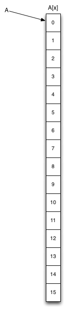

Lab 10: C++ classes
classes and objects, constructors and destructors, refactoring
Goals
After this lab you will be able to
- Use classes in place of structs.
- Write constructors and destructors for classes.
- Use two-dimensional arrays.
- Refactor code.
Apart from teaching you to use classes and 2d-arrays, this lab is designed to have you work repeatedly on the same code. By now you should be reading and writing code much more quickly than at the beginning of the course. You should also be using your text editor more expertly, for example using search-and-replace, moving around quickly in the file, cutting and pasting lines using keystrokes, etc. You will spend many hours in your text editor during your degree and beyond: you should master it.
Refactoring code (Task 3) is an activity that exercises your editor kung-fu, and will not take too long if you use the editor well.
Setup
Note that these instructions no longer include all steps. You should know how to do these things by now. If in doubt, refer to previous lab instructions.
In the terminal:
- Move into your local repo (making it your "working directory").
- Download the new material for Lab 10.
- Expand it into your working directory. This will create the directory '10' containing the files you need.
- Add the new directory to your Git repo with
$ git add 10
Introducing C++
C++ extends the C language with support for classes to support Object-Oriented Programming, and templates to support Generic Programming. This week we will look at classes, but first a summary of the workflow changes you need to use C++.
- C++ source code files have the conventional suffix ".cpp" or ".cc", instead of C's ".c".
- C++ header files may have the suffix ".hpp" or ".hh", or stick with C's ".h". We will use ".hpp" to make it clear when we have a C++ header.
- The GNU C++ compiler program is called "g++", instead of "gcc".
Note that the intructions below do not provide compile commands for you to cut'n'paste. You will need to read the notes above and construct your own compile commands.
A C++ primer for C programmers
Here is a very good and concise introduction to C++ for C programmers. by Prof. Tom Anderson of the University of Washington.Prof. Anderson has strong opinions about the useful and less-useful parts of C++, and draws your attention to the most important parts in less than 12 pages. The document is dated in some ways, but most of the advice is excellent.
Things to do:
- Read Sections 1 through 3 carefully: they will help with your tasks this week.
- Read Sections 4 and 5 at your leisure, and remember that opinions vary wildly on this subject, and things change over time.
- Note that the Standard Template Library (STL) is now mature and supported by most compilers, and you can and should use it with confidence.
Note that you really are expected to read the document, and the following instructions may not be enough by themselves to help you solve the tasks. Another goal of this lab (and the class) is to encourage you to read around your subjects and feel personal responsibility for learning.
** STOP ** READ THE PRIMER DOCUMENT BEFORE CONTINUING **
Task 1: Image class
We will develop a C++ program, using ideas familiar from previous labs plus new syntax for creating classes.
Requirements
- Read the Primer (see above) and the Guide section on classes (see below), constructors and destructors below.
- Write a new C++ source file "image.cpp" that contains a complete implementation of the Image class declared in the provided C++ header file "image.hpp".
- Your file must include "image.hpp" without any modifications.
- Write your own main() function for testing your class, but put it in another source file: do not define main() in "image.cpp" as this will interfere with the grading robot.
Submission
Add and commit the single file "image.cpp" to your repo.
Guide
C to C++
Here is an interface definition for an image data type in C, extended from the one we developed in an earlier lab:
typedef struct image {
unsigned int cols;
unsigned int rows;
uint8_t* pixels;
} img_t;
/* Returns an img_t structure containing 0x0 pixels. */
img_t img_create( void );
/* Frees all memory allocated for img */
void img_destroy( img_t* img );
/* Changes the size of an image, allocating memory as necessary, and
setting all pixels to fillcolour. Returns 0 on success, or a non-zero error code.*/
int img_resize( img_t* img, unsigned int width, unsigned int height, uint8_t fillcolour );
/* Sets the colour of the pixel at (x,y) to colour. Returns 0 on success, else a non-zero
error code. If (x,y) is not a valid pixel, the call fails and the image does not change. */
int img_set_pixel( img_t* img, unsigned int x, unsigned int y, uint8_t colour );
/* Gets the colour of the pixel at (x,y) and stores at the address pointed to by colour.
Returns 0 on success, else a non-zero error code. */
int img_get_pixel( img_t* img, unsigned int x, unsigned int y, uint8_t* colourp );
We could use these definitions as-is in a C++ program, since C is almost a subset of C++. However, an implementation in C++ style would have the following differences:
- The structure would be a class
- The functions operating on image structures would be methods of the image class, and would not need the "img_" prefix.
- Image class methods do no need a pointer to the image data structure, since they automatically have a
thispointer-to-the-object-on-which-the-method-was-called. - The fields of the struct would not be accessible from outside the class: an image could only be modified using its methods.
- img_create() would be a constructor
- img_destroy() would be a destructor
Here is the C++ version:
class Image {
private:
unsigned int cols;
unsigned int rows;
uint8_t* pixels;
public:
/* Constructs an image of 0x0 pixels. */
Image();
/* Frees all memory allocated for img */
~Image();
/* Changes the size of an image, allocating memory as necessary, and
setting all pixels to fillcolour. Returns 0 on success, or a non-zero error code.*/
int resize( unsigned int width, unsigned int height, uint8_t fillcolour );
/* Sets the colour of the pixel at (x,y) to colour. Returns 0 on success, else a non-zero
error code. If (x,y) is not a valid pixel, the call fails and the image does not change.*/
int set_pixel( unsigned int x, unsigned int y, uint8_t colour );
/* Gets the colour of the pixel at (x,y) and stores at the address pointed to
by colourp. Returns 0 on success, else a non-zero error code. */
int get_pixel( unsigned int x, unsigned int y, uint8_t* colourp );
};
Here they are again without the comments so the functional parts are easier to compare:
C:
typedef struct image {
unsigned int cols;
unsigned int rows;
uint8_t* pixels;
} img_t;
img_t img_create( void );
void img_destroy( img_t* img );
int img_resize( img_t* img, unsigned int width, unsigned int height, uint8_t fillcolour );
int img_set_pixel( img_t* img, unsigned int x, unsigned int y, uint8_t colour );
int img_get_pixel( img_t* img, unsigned int x, unsigned int y, uint8_t* colourp );
C++:
class Image {
private:
unsigned int cols;
unsigned int rows;
uint8_t* pixels;
public:
Image();
~Image();
int resize( unsigned int width, unsigned int height, uint8_t fillcolour );
int set_pixel( unsigned int x, unsigned int y, uint8_t colour );
int get_pixel( unsigned int x, unsigned int y, uint8_t* colourp );
};
Examples of usage, first in C:
img_t img = img_create();
if( img_resize( &img, 640, 480, 0 ) != 0 )
{
exit(1); // quit
}
for( int i=0; i<100; i++ )
{
img_set_pixel( &img,
rand() % 640,
rand() % 480,
rand() % 256 );
}
// output the image here somehow
// ...
img_destroy( &img ); // must not forget this
then C++:
Image img;
if( img.resize( 640, 480, 0 ) != 0 )
{
exit(1); // quit
}
for( int i=0; i<100; i++ )
{
img.set_pixel( rand() % 640,
rand() % 480,
rand() % 256 );
}
// output the image here somehow
// ...
// img destructor is called when img goes out of scope.
Constructors and destructors
We have consistently used X_create() and X_destroy() functions when dealing with structures. This is a very common design pattern for doing allocation and deallocation cleanly. This technique became so common in C and is so useful that it is built in to C++ in the form of constructors and destructors.
Constructors
Whenever an instance of a class (an object) is created, its constructor is automatically called. You put initialization code inside the constructor, so that all instances have their data members initialized properly before they can be used.
Constructors have the same name as their class, and they have no return type or value.
When a constructor is called, the constructors of all the class's data members are called first automatically, so they are ready for use in the constructor. There is a special syntax for giving arguments to these data member constructors, called the initialization list:
// contains the class declaration for Image
#include "image.hpp"
Image::Image()
: cols(0), // initialization list
rows(0),
pixels(NULL)
{
// No work to do in constructor body in this example:
// the intialization list took care of it.
// All members now have safe initial values.
}
A weak point of the C++ design is that handling errors in constructors is quite complicated, since they have no return value. It is a good idea to avoid doing anything in a constructor that could fail, for example any system call or memory allocation. This is why in our example we construct only 0x0 pixel images, and do our pixel allocation in Image::resize(); If any new fails, your program will be terminated immediately. You can change this behaviour using exceptions but that is beyond the scope of this class.
(Some people think exceptions are a Bad Idea, for example
Google does not allow them in any C++ code).
Destructors
Whenever an object is destroyed, either by going out of scope or when delete is called on its address, the destructor is automatically called. You put memory deallocation and clean-up code in the destructor so you can not forget to recycle resources when you are finished with an object. After the destructor finishes, the destructors of any data members are called.
Destructors have the same name as their class, prefixed with a '~' and they have no return type or value.
// contains the class declaration for Image
#include "image.hpp"
Image::~Image()
{
// free everything that could have been allocated inside this object
if( pixels != NULL )
{
delete[] pixels;
}
}
Creating and destroying objects
Objects can be created on the stack, just by declaring them, and their methods called using dot syntax:
Image img; img.resize( 100, 100, 255 ); // white square image
When a stack-allocated object goes out of scope, its destructor is called automatically.
Objects can also be allocated on the heap using the new keyword followed by the class name. new replaces malloc() for most purposes in C++. new returns a pointer to an instance of the class, so members and methods are accessed using arrow syntax.
Unfortunately, keeping track of pointers to destruct objects automatically is quite costly, so heap-allocated objects must be destroyed manually:
Image* img = new Image; img->resize( 100, 100, 255 ); // white square image // (use image, then when done ) delete img;
Other languages such as Java and C# can keep track of heap allocations and save you the trouble of deleting things. This garbage collection process can be very good for code robustness, but slows things down a bit.
In C++ the basic memory sanitation strategy is (i) write thorough destructors; and (ii) use stack variables whenever possible. Remember your stack is small so big things go on the heap. A good approach is to have a small stack-allocated wrapper/header object for each of your heap-allocated big things, so that when the wrapper object goes out of scope its destructor cleans up properly. The Image class follows this pattern.
Default constructors
A constructor that takes no arguments is called a default constructor. If you do not specify any constructor for your class, a default constructor is generated automatically that simply calls the constructors of all data members of the class. The built-in types (int, float, etc) have default constructors that allocate space only: their values are left uninitialized, like in C.
Creating arrays of objects
New and delete have convenient array forms, which can be used with built-in types and any object that has a default constructor.
int* arr = new int[100]; // (use int array, then when done) delete[] arr;
For objects, the default constructor is called for every item in the array. Similarly delete[] calls the destructor on each item in the array before freeing the entire array.
Bubble* bubbles = new Bubble[100]; // produces 100 bubbles, all the same // (use bubble array, then when done) delete[] bubbles;
Teach the controversy
Not everyone is a fan of new and delete, and this "rant" by Stanford professor David Mazières discusses some of the issues that bother people. Following the author's argument will test and boost your understanding of how they work.
Methods
Class methods are like normal functions, but they can only be called through an object of the right type. A key advantage of this is that you can not pass in the wrong kind of pointer, or a null pointer.
Methods are defined (in .cpp file) by prefixing the method name with the name of the class:
#include "image.hpp"
int Image::resize( unsigned int width, unsigned int height, uint8_t fillcolour )
{
// do the work here
// ...
return 0;
}
int Image::set_pixel( unsigned int x, unsigned int y, uint8_t colour )
{
// do the work here
// ...
return 0;
}
// (etc)
Inside a class's methods, all the members of the class are available using just their names:
int Image::set_pixel( unsigned int x, unsigned int y, uint8_t colour )
{
// x, y, and colour are local variables
// pixels and cols are members of this object
pixels[ y*cols + x ] = colour;
return 0;
}
In case a method needs to know which object it was called on, a pointer called this always exists. this points to the object on which the method was called. So this code is identical to the above:
int Image::set_pixel( unsigned int x, unsigned int y, uint8_t colour )
{
// x, y, and colour are local variables
// pixels and cols are members of this object
// so can be accessed through the 'this' pointer
this->pixels[ y * this->cols + x ] = colour;
return 0;
}
Inside an object's methods, its other methods are also available using their name alone, or through the this pointer:
void Image::set_grey_all_over( void )
{
for( int y=0; y<rows; y++ ) // this->rows
for( int x=0; x<cols; x++ ) // this->cols
set_pixel( x, y, 128 ); // this->set_pixel()
}
Once an object is constructed, its data members and methods are accessed using dot or arrow syntax, just like structures, except that now we can access an object's methods to operate on it:
Image i(); i.resize( 640, 480, 0 ); i.set_pixel( 100, 100, 255 ); Image* j = new Image(); j->resize( 640, 480, 0 ); j->set_pixel( 100, 100, 255 );
Task 2: Save & Load
Extend your Image class by adding save() and load() methods. The file format is up to you. It can be text or binary, as long as the load() loads the save()'d format correctly.
Requirements
- Write a new C++ source file "image2.cpp" that contains a complete implementation of the Image class declared in the provided C++ header file "image2.hpp".
- Your file must include "image2.hpp" without any modifications.
- Write your own main() function for testing your class, but put it in another source file: do not define main() in "image2.cpp" as this will interfere with the grading robot.
Submission
Add and commit the single file "image2.cpp" to your repo.
Guide
See Lab 6 for file I/O tutorial and examples.
Task 3: Alternate implementation using 2D arrays
Change the internal representation of the image in your Image class, without changing the external interface.
We will use a multi-dimensional array to store pixels instead of the one-dimensional pixel array we have used so far.
The process of revising your implementation without changing the interface or external behaviour is called refactoring and can be very important for keeping code maintainable, particularly after a period of adding a lot of features or bugfixes. Tidying up a messy implementation before it gets too complicated for mortals to understand is useful work. On the other hand you should resist tinkering for the sake of it: you risk introducing bugs.
Requirements
The supplied file "image3.hpp" differs from "image2.hpp" only in
that it declares the private pixel data pointer to be of type uint8_t**. You must reimplement the Image class using a 2D array. This will make memory allocation code a little more complex (see the Guide below), but make accessing pixels easier and arguably make the code more readable. Certain image operations you implemented in an earlier lab could be faster or easier using 2D arrays: you do not have to implement them here, but you should think about which ones would benefit.
- Write a new C++ source file "image3.cpp" that contains a complete implementation of the Image class declared in the provided C++ header file "image3.hpp".
- Your file must include "image3.hpp" without any modifications.
- Note that since the interface of the class (i.e. the public methods) did not change, you can use the same main() program to test it as for the previous tasks. Make sure no main() function exists in "image3.cpp".
Caution
save() and load() need some careful thought. Favour correctness over speed, but try not to make too many system calls: they are slow.
Submission
Add and commit the single file "image3.cpp" to your repo.
Guide
C and C++ support multi-dimensional arrays. The syntax is very simple but the underlying model is a little complex. Consider these arrays, where a 2D array is declared and used in the way you might guess by extrapolating from the 1D case:
int A[16]; // 1D array of 16 elements
int B[4][4]; // 2D array of 4x4 elements
// sets every element in A
for( int a=0; a<16; a++ )
{
A[a] = 99;
}
// sets every element in B
for( int y=0; y<4; y++ )
{
for( int x=0; x<4; x++ )
{
B[y][x] = 99;
}
}
The memory layout for these arrays is quite different, as shown in the figure:
|  |

|
'A' is of type array-of-int. 'B' is of type array-of-array-of-int. You can see that there is some overhead in using the 2D array, as we require more memory space and a two-step lookup to find the integer of interest.
More dimensions
The array declaration and access syntax works for arbitrary numbers of dimensions:
int C[3][3][3]; // 3D array of 9 ints int D[20][5][10][4]; // 4D array of 20*5*10*4 ints C[0][0][0] = 99; D[101][2][1][0] = 99;
In practice, arrays of more than 3 dimensions are rarely used.
Building 2D arrays on the heap
The examples above show multi-dimensional arrays allocated on the stack. They can also be allocated manually on the heap. This example builds arrays A and B on the heap (omitting error checking) in C:
int* A = malloc( 16 * sizeof(int) );
int** B = malloc( 4 * sizeof(int*) );
for( int i=0; i<4; i++ )
{
B[i] = malloc( 4 * sizeof(int) );
}
This results in the same memory layout picture as above, except that all the arrays are in the heap: only pointers A and B are on the stack.
The same thing in C++ style using new:
int* A = new int[16];
int** B = new int*[4];
for( int i=0; i<4; i++ )
{
B[i] = new int[4];
}
While this creation process is a bit laborious, accessing these arrays once created is simple and almost as fast as 1D arrays, so 2D arrays do get used quite a lot in practice.
When multi-dimensional arrays are built up manually in this way, you can cheaply reorder the higher dimensions of the array (e.g. B[y]) by swapping the pointers they contain, without touching the contents of the lower dimensions (e.g. B[*][x]). If the elements stored in the lowest dimension are numerous and/or large, this can make a big difference in performance.